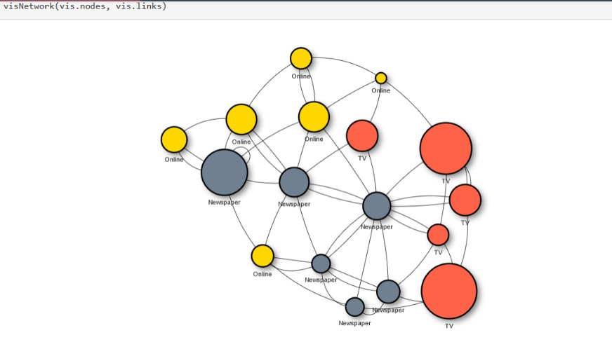

El programa que voy a mostraros es el último de una serie de pruebas que paso a paso han ido conformándose hasta crear las funciones y flujo final, aunque básicamente mantienen la primera idea original que os cuento.
Realmente la primerísima idea para hacer estos dibujos en R, fue usar un paquete como igraph, del que ya hice un post hace tiempo Igraph u otros como visNetwork que aunque no lo he usado parece muy interesante ya que se pueden crear gráficos de red interactivos parecidos a los que buscamos.

El problema que tuve con estos paquetes es que no supe solucionar cómo crear los estilos propios para los círculos, así que cambié de estrategia tendría que progrtamar todo desde cero.
Muchos de mis post, más que de programación, son de diseño gráfico con R, es una debilidad que tengo, y eso que R no parece un programa bueno para esto, pero al final le sacamos partido, mira sino estos post de hace tiempo:
Funciones del Programa
initialize_canvas(width, height):
- Descripción: Establece el área de dibujo (lienzo) en R, dibuja un rectángulo que delimita este lienzo y añade una firma con la fecha actual.
- Parámetros:
width: Ancho del lienzo.height: Alto del lienzo.
## Programa generador de partituras gráficas
## Autor: Fernando Villalba
## Fecha: abril 2014
###########################################
set.seed(123) # semilla aleatoria
# Paso 1: Función para establecer el lienzo
initialize_canvas <- function(width, height) {
# incializa el gráfico en blanco
plot(NULL, xlim=c(0, width), ylim=c(0, height), type="n", asp=1,axes = FALSE, xlab = "", ylab = "", main = "")
# pinta un rectangulo de los bordes de ancho
rect(0, 0, width, height,lwd=5)
# Obtener la fecha actual en formato deseado
fecha_actual <- format(Sys.Date(), "%d %B %Y")
# Añadir firma y fecha en la esquina inferior derecha
# Usar bquote para insertar la variable evaluada en la expresión
firma_fecha <- bquote(italic("VilBer") ~ "-" ~ .(fecha_actual))
# text(x=95, y=5, labels=firma_fecha, adj=1, cex=0.8, font=3)
mtext(side=1, line=-1, adj=1, text=firma_fecha, cex=0.8, font=2)
}
generate_circus(num_circles, width, height, min_radius, max_radius, nrad):
- Descripción: Genera un conjunto de círculos con posiciones y radios aleatorios dentro de los límites del lienzo, asegurándose de que los círculos no se superpongan más de una distancia mínima especificada.
- Parámetros:
num_circles: Número de círculos a generar.width, height: Dimensiones del lienzo.min_radius, max_radius: Rango de radios para los círculos.nrad: Factor que define la separación mínima entre círculos en función de su radio.
# Paso 2: Función para crear la tabla con los datos de los circulos
generate_circus <- function(num_circles, width, height, min_radius, max_radius, nrad) {
# num_circles = numero de circulos en el lienzo
# width, height = ancho y alto del lienzo
# min_radius, max_radius = min y max valor del radio de los circulos generados
# nrad = indica la distancia de separación minima de los circulos, para que no se superpongan en numero de veces el radio maximo
circles <- data.frame(id = integer(0), x = numeric(0), y = numeric(0), radius = numeric(0), estilo = integer(0),id_padre = integer(0))
max_attempts <- 1000 # Límite de intentos para evitar bucles infinitos
for (i in 1:num_circles) {
valid <- FALSE
attempts <- 0
while (!valid && attempts < max_attempts) {
# Genera un nuevo punto y radio
new_x <- runif(1, min_radius, width - min_radius)
new_y <- runif(1, min_radius, height - min_radius)
new_radius <- runif(1, min_radius, max_radius)
attempts <- attempts + 1
# Verifica la distancia con todos los círculos ya creados
if (nrow(circles) == 0) {
valid <- TRUE
} else {
distances <- sqrt((circles$x - new_x)^2 + (circles$y - new_y)^2)
min_distance_needed <- nrad * max(max_radius, new_radius) # nrad veces el radio máximo de cualquiera
valid <- all(distances >= min_distance_needed)
}
}
if (valid) {
style <- sample(1:5, 1)
circles <- rbind(circles, data.frame(id = i, x = new_x, y = new_y, radius = new_radius, estilo=style, id_padre = 0))
} else {
stop("No fue posible colocar todos los círculos tras ", max_attempts, " intentos.")
}
}
# Asignación de ID del padre (opcional y personalizable)
circles$id_padre <- sapply(circles$id, function(x) {
if (runif(1) < 0.7) {
# 70% de probabilidad de que el círculo no tenga padre
return(0)
} else {
# Los círculos con radios mayores tienen más posibilidad de ser elegidos como padres
# Calculamos pesos, donde el peso es proporcional al radio
weights <- circles$radius / min(circles$radius) # Esto asegura que el círculo más pequeño tenga peso 1
weights <- weights * ifelse(circles$radius >= median(circles$radius), 3, 1) # Doble de peso si el radio es mayor o igual que la mediana
# Asegurarse de no incluir el propio círculo como su padre
weights[x] <- 0
# Selecciona un id de padre de acuerdo con los pesos
return(sample(circles$id, 1, prob = weights))
}
})
return(circles)
}
assign_family_structure_ii(circles, width, height):
- Descripción: Asigna una estructura jerárquica de relaciones padre-hijo a los círculos basada en su proximidad y tamaño. Los círculos solo pueden ser padres de otros círculos si están dentro de una distancia menor a cuarto de la diagonal del lienzo.
- Parámetros:
circles: DataFrame de círculos generados.width, height: Dimensiones del lienzo.
# Paso 3: Función que crea la relación entre padre-hijo de los circulos
# asigna la estructura de padre hijo
assign_family_structure_ii <- function(circles, width, height) {
# Calcular 1/4 de la diagonal del lienzo
max_distance <- 0.25 * sqrt(width^2 + height^2)
# Ordenar círculos por radio de mayor a menor y resetear índices
circles <- circles[order(-circles$radius), ]
circles$id <- seq_len(nrow(circles)) # Asignar un ID consecutivo a cada círculo
circles$id_padre <- 0 # Inicializar todos los id_padre a 0
# Iterar sobre cada círculo para asignar hijos
for (i in 1:nrow(circles)) {
if (circles$id_padre[i] == 0) { # Solo si el círculo no tiene aún un padre asignado
# Determinar cuántos hijos asignar
num_cercanos <- sample(0:(nrow(circles)/4), 1)
if (num_cercanos > 0) {
# Calcular distancias desde el círculo actual a todos los demás
distances <- sqrt((circles$x - circles$x[i])^2 + (circles$y - circles$y[i])^2)
distances[i] <- Inf # Evitar que un círculo sea su propio hijo
# Filtrar por distancia máxima permitida
within_distance <- distances < max_distance
# Ordenar por distancia y seleccionar los 'num_cercanos' más cercanos que no tengan padre asignado y estén dentro del límite de distancia
closest_indices <- order(distances)
child_candidates <- closest_indices[circles$id_padre[closest_indices] == 0 & within_distance[closest_indices]][1:num_cercanos]
# Asignar el id actual como padre a los círculos más cercanos sin padre asignado y dentro del límite de distancia
circles$id_padre[child_candidates] <- circles$id[i]
}
}
}
return(circles)
}
draw_splinessss(circles):
- Descripción: Dibuja líneas curvas (splines) entre círculos padres e hijos para visualizar las relaciones familiares.
- Parámetros:
circles: DataFrame de círculos con estructura familiar asignada.
# Paso 4: Funciones de dibujo
# dibuja splines entre los centros de los circulos padre e hijos
draw_splinessss <- function(circles) {
# Asegura que los splines se dibujan sobre los círculos existentes
par(new = TRUE)
for (i in 1:nrow(circles)) {
if (circles$id_padre[i] != 0) {
# Encuentra el círculo padre
padre <- circles[circles$id == circles$id_padre[i], ]
if (nrow(padre) == 1) { # Asegúrate de que el padre existe
# Define los puntos inicial y final para el spline
x1 <- circles$x[i]
y1 <- circles$y[i]
x2 <- padre$x
y2 <- padre$y
radio_menor <- max(circles$radius[i], padre$radius)
# Calcula el punto medio
xm <- (x1 + x2) / 2
ym <- (y1 + y2) / 2
# Desplazamiento perpendicular a la línea entre los puntos
# Calcula un vector perpendicular
dx <- x2 - x1
dy <- y2 - y1
# Normaliza y rota 90 grados
len <- sqrt(dx^2 + dy^2)
dx_perp <- -dy / len
dy_perp <- dx / len
# Calcula el punto de desviación
xm_desplazado <- xm + radio_menor * dx_perp
ym_desplazado <- ym + radio_menor * dy_perp
# Puntos para xspline incluyen el punto desviado
x_points <- c(x1, xm_desplazado, x2)
y_points <- c(y1, ym_desplazado, y2)
# Dibuja un spline entre el hijo y el padre con curvatura
xspline(x = x_points, y = y_points, shape = sample(c(-1,1), 1), border = "black", lwd = 1)
}
}
}
}
draw_circles(circles):
- Descripción: Visualiza los círculos en el lienzo, aplicando estilos variados que incluyen círculos rellenos, círculos con bordes, y círculos con decoraciones adicionales como mini planetas.
- Parámetros:
circles: DataFrame de círculos con estilos y posiciones definidas.
# Funcion que pinta los circulos según el estilo
draw_circles <- function(circles) {
apply(circles, 1, function(circle) {
# Asigna un estilo de forma aleatoria para demostración; ajusta según la lógica deseada
style <- circle["estilo"]# sample(1:5, 1)
if (style == 1) {
# Dibujar círculo negro con relleno negro
symbols(circle["x"], circle["y"], circles=circle["radius"], inches=FALSE, add=TRUE, fg="black", bg="black")
} else if (style == 2) {
# Dibujar círculo con borde negro y relleno blanco
symbols(circle["x"], circle["y"], circles=circle["radius"], inches=FALSE, add=TRUE, fg="black", bg="white")
} else if (style == 3) {
# Dibujar círculos concéntricos
for (i in 2:5) {
symbols(circle["x"], circle["y"], circles = circle["radius"] * i, inches = FALSE, add = TRUE)
}
symbols(circle["x"], circle["y"], circles = circle["radius"] * 4+0.2*circle["radius"], inches = FALSE, add = TRUE)
symbols(circle["x"], circle["y"], circles = circle["radius"], inches = FALSE, add = TRUE, fg = "black",bg = "black")
} else if (style == 4) {
# Dibujar dos círculos concéntricos y una letra encima
symbols(circle["x"], circle["y"], circles=circle["radius"] * 2, inches=FALSE, add=TRUE, fg="black", bg="white")
symbols(circle["x"], circle["y"], circles=circle["radius"], inches=FALSE, add=TRUE, fg="black", bg="black")
angle <- runif(1, 0, 360) # Genera un ángulo aleatorio entre 0 y 360 grados
text(circle["x"], circle["y"], "lll", col="white", cex=1.5, srt=angle)
# text(circle["x"], circle["y"], "lll", col="white", cex=1.5) # Puedes cambiar "R" por cualquier otra letra
} else if (style == 5) {
# Dibuja un circulo con mini planetas alrededor
# 1. el circulo central
symbols(circle["x"], circle["y"], circles=circle["radius"], inches=FALSE, add=TRUE, fg="black", bg="black")
# 2. los planetas
n_planet=sample(2:5, 1) # numero de planetas
for (i in 1:n_planet){
rad_mini<- circle["radius"] / 4 # un cuarto del radio del planeta central
r_orbit<- sample(2:5, 1) # dist orbital del planeta en num de radios del central
ang_planet <- runif(1, min = 0, max = 2*pi) # angulo del planeta en radianes
# Calcular la posición de cada mini círculo
x_mini <- circle["x"] + r_orbit * circle["radius"] * cos(ang_planet)
y_mini <- circle["y"] + r_orbit * circle["radius"] * sin(ang_planet)
# Dibujar los mini círculos y las líneas que los unen al círculo principal
# Todos los mini círculos son negros macizos
symbols(x_mini, y_mini, circles=rad_mini, inches=FALSE, add=TRUE, fg="black", bg="black")
# Dibuja la linea que lo une al planet central
lines(c(circle["x"],x_mini ), c(circle["y"], y_mini), col = "black")
}
}
})# fin de funcion appply
}
pinta_cuadro_circulos(width, height, radio_min, radio_max, rad_cercania, num_circles):
- Descripción: Función principal que orquesta la creación del lienzo, la generación de círculos, la asignación de la estructura familiar y la visualización final de los círculos y sus conexiones.
- Parámetros:
width, height: Dimensiones del lienzo.radio_min, radio_max: Rango de radios para los círculos.rad_cercania: Factor de cercanía para evitar superposición de círculos.num_circles: Número de círculos a generar.
# Función que recoge todo lo anterior para pintar un cuadro
pinta_cuadro_circulos<-function(width=1000,height=800,radio_min=5,radio_max=50,rad_cercania=1,num_circles=10){
#num_circles <- sample(3:20, 1) # Número aleatorio de círculos entre 5 y 20
par(mar=c(0.1, 0.1, 0.1, 0.1))
initialize_canvas(width, height)
clip(0, width, 0, height) # recorta el dibujo por el corte con los ejes
circles <- generate_circus(num_circles, width, height, radio_min, radio_max, rad_cercania)
circles1 <-assign_family_structure_ii(circles, width, height)
draw_splinessss(circles1)
draw_circles(circles1)
}